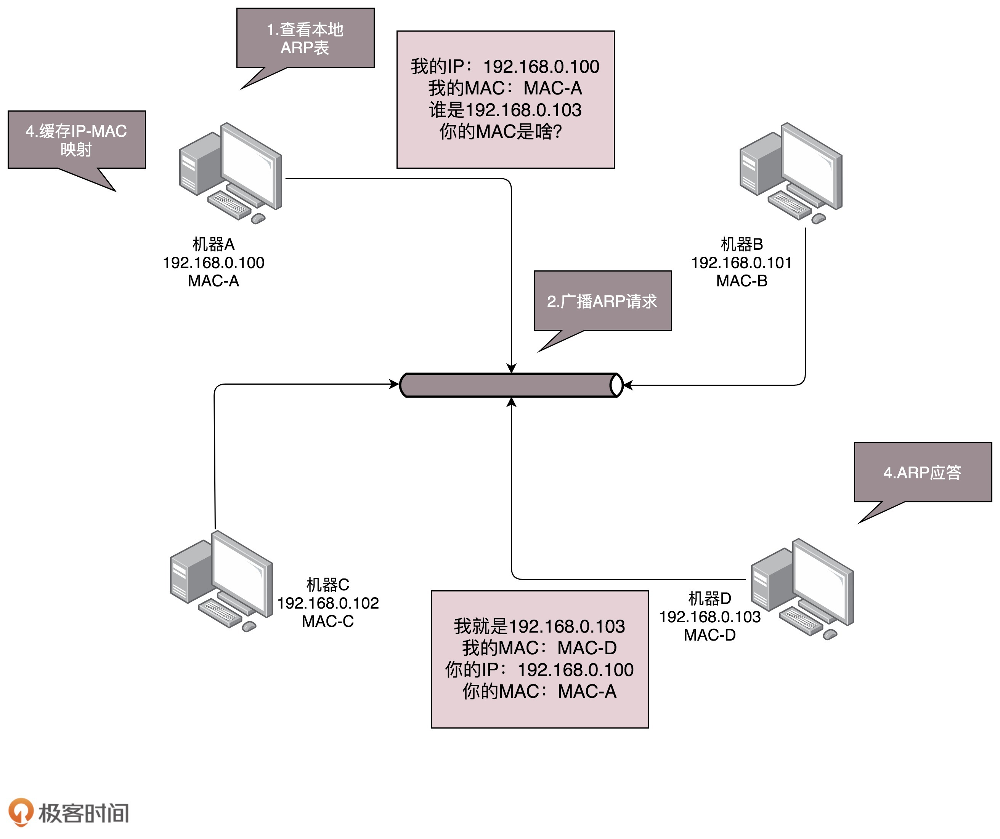

- 00 开篇词 想成为技术牛人？先搞定网络协议！.md.html
- 01 为什么要学习网络协议？.md.html
- 02 网络分层的真实含义是什么？.md.html
- 03 ifconfig：最熟悉又陌生的命令行.md.html
- 04 DHCP与PXE：IP是怎么来的，又是怎么没的？.md.html
- 05 从物理层到MAC层：如何在宿舍里自己组网玩联机游戏？.md.html
- 06 交换机与VLAN：办公室太复杂，我要回学校.md.html
- 07 ICMP与ping：投石问路的侦察兵.md.html
- 08 世界这么大，我想出网关：欧洲十国游与玄奘西行.md.html
- 09 路由协议：西出网关无故人，敢问路在何方.md.html
- 10 UDP协议：因性善而简单，难免碰到“城会玩”.md.html
- 11 TCP协议（上）：因性恶而复杂，先恶后善反轻松.md.html
- 12 TCP协议（下）：西行必定多妖孽，恒心智慧消磨难.md.html
- 13 套接字Socket：Talk is cheap, show me the code.md.html
- 14 HTTP协议：看个新闻原来这么麻烦.md.html
- 15 HTTPS协议：点外卖的过程原来这么复杂.md.html
- 16 流媒体协议：如何在直播里看到美女帅哥？.md.html
- 17 P2P协议：我下小电影，99%急死你.md.html
- 18 DNS协议：网络世界的地址簿.md.html
- 19 HttpDNS：网络世界的地址簿也会指错路.md.html
- 20 CDN：你去小卖部取过快递么？.md.html
- 21 数据中心：我是开发商，自己拿地盖别墅.md.html
- 22 VPN：朝中有人好做官.md.html
- 23 移动网络：去巴塞罗那，手机也上不了脸书.md.html
- 24 云中网络：自己拿地成本高，购买公寓更灵活.md.html
- 25 软件定义网络：共享基础设施的小区物业管理办法.md.html
- 26 云中的网络安全：虽然不是土豪，也需要基本安全和保障.md.html
- 27 云中的网络QoS：邻居疯狂下电影，我该怎么办？.md.html
- 28 云中网络的隔离GRE、VXLAN：虽然住一个小区，也要保护隐私.md.html
- 29 容器网络：来去自由的日子，不买公寓去合租.md.html
- 30 容器网络之Flannel：每人一亩三分地.md.html
- 31 容器网络之Calico：为高效说出善意的谎言.md.html
- 32 RPC协议综述：远在天边，近在眼前.md.html
- 33 基于XML的SOAP协议：不要说NBA，请说美国职业篮球联赛.md.html
- 34 基于JSON的RESTful接口协议：我不关心过程，请给我结果.md.html
- 35 二进制类RPC协议：还是叫NBA吧，总说全称多费劲.md.html
- 36 跨语言类RPC协议：交流之前，双方先来个专业术语表.md.html
- 37 知识串：用双十一的故事串起碎片的网络协议（上）.md.html
- 38 知识串：用双十一的故事串起碎片的网络协议（中）.md.html
- 39 知识串：用双十一的故事串起碎片的网络协议（下）.md.html
- 40 搭建一个网络实验环境：授人以鱼不如授人以渔.md.html
- 加餐1 创作故事：我是如何创作“趣谈网络协议”专栏的？.md.html
- 协议专栏特别福利 答疑解惑1期.md.html
- 协议专栏特别福利 答疑解惑2期.md.html
- 协议专栏特别福利 答疑解惑3期.md.html
- 协议专栏特别福利 答疑解惑4期.md.html
- 协议专栏特别福利 答疑解惑5期.md.html
- 结束语 放弃完美主义，执行力就是限时限量认真完成.md.html
- 捐赠
05 从物理层到MAC层：如何在宿舍里自己组网玩联机游戏？
上一节，我们见证了IP地址的诞生，或者说是整个操作系统的诞生。一旦机器有了IP，就可以在网络的环境里和其他的机器展开沟通了。
故事就从我的大学宿舍开始讲起吧。作为一个八零后，我要暴露年龄了。
我们宿舍四个人，大一的时候学校不让上网，不给开通网络。但是，宿舍有一个人比较有钱，率先买了一台电脑。那买了电脑干什么呢？
首先，有单机游戏可以打，比如说《拳皇》。两个人用一个键盘，照样打得火热。后来有第二个人买了电脑，那两台电脑能不能连接起来呢？你会说，当然能啊，买个路由器不就行了。
现在一台家用路由器非常便宜，一百多块的事情。那时候路由器绝对是奢侈品。一直到大四，我们宿舍都没有买路由器。可能是因为那时候技术没有现在这么发达，导致我对网络技术的认知是逐渐深入的，而且每一层都是实实在在接触到的。
第一层（物理层）
使用路由器，是在第三层上。我们先从第一层物理层开始说。
物理层能折腾啥？现在的同学可能想不到，我们当时去学校配电脑的地方买网线，卖网线的师傅都会问，你的网线是要电脑连电脑啊，还是电脑连网口啊？
我们要的是电脑连电脑。这种方式就是一根网线，有两个头。一头插在一台电脑的网卡上，另一头插在另一台电脑的网卡上。但是在当时，普通的网线这样是通不了的，所以水晶头要做交叉线，用的就是所谓的1－3、2－6交叉接法。
水晶头的第1、2和第3、6脚，它们分别起着收、发信号的作用。将一端的1号和3号线、2号和6号线互换一下位置，就能够在物理层实现一端发送的信号，另一端能收到。
当然电脑连电脑，除了网线要交叉，还需要配置这两台电脑的IP地址、子网掩码和默认网关。这三个概念上一节详细描述过了。要想两台电脑能够通信，这三项必须配置成为一个网络，可以一个是192.168.0.1/24，另一个是192.168.0.2/24，否则是不通的。
这里我想问你一个问题，两台电脑之间的网络包，包含MAC层吗？当然包含，要完整。IP层要封装了MAC层才能将包放入物理层。
到此为止，两台电脑已经构成了一个最小的局域网，也即LAN。可以玩联机局域网游戏啦！
等到第三个哥们也买了一台电脑，怎么把三台电脑连在一起呢？
先别说交换机，当时交换机也贵。有一个叫做Hub的东西，也就是集线器。这种设备有多个口，可以将宿舍里的多台电脑连接起来。但是，和交换机不同，集线器没有大脑，它完全在物理层工作。它会将自己收到的每一个字节，都复制到其他端口上去。这是第一层物理层联通的方案。
第二层（数据链路层）
你可能已经发现问题了。Hub采取的是广播的模式，如果每一台电脑发出的包，宿舍的每个电脑都能收到，那就麻烦了。这就需要解决几个问题：
- 这个包是发给谁的？谁应该接收？
- 大家都在发，会不会产生混乱？有没有谁先发、谁后发的规则？
- 如果发送的时候出现了错误，怎么办？
这几个问题，都是第二层，数据链路层，也即MAC层要解决的问题。MAC的全称是Medium Access Control，即媒体访问控制。控制什么呢？其实就是控制在往媒体上发数据的时候，谁先发、谁后发的问题。防止发生混乱。这解决的是第二个问题。这个问题中的规则，学名叫多路访问。有很多算法可以解决这个问题。就像车管所管束马路上跑的车，能想的办法都想过了。
比如接下来这三种方式：
方式一：分多个车道。每个车一个车道，你走你的，我走我的。这在计算机网络里叫作信道划分；
方式二：今天单号出行，明天双号出行，轮着来。这在计算机网络里叫作轮流协议；
方式三：不管三七二十一，有事儿先出门，发现特堵，就回去。错过高峰再出。我们叫作随机接入协议。著名的以太网，用的就是这个方式。
解决了第二个问题，就是解决了媒体接入控制的问题，MAC的问题也就解决好了。这和MAC地址没什么关系。
接下来要解决第一个问题：发给谁，谁接收？这里用到一个物理地址，叫作链路层地址。但是因为第二层主要解决媒体接入控制的问题，所以它常被称为MAC地址。
解决第一个问题就牵扯到第二层的网络包格式。对于以太网，第二层的最开始，就是目标的MAC地址和源的MAC地址。

接下来是类型，大部分的类型是IP数据包，然后IP里面包含TCP、UDP，以及HTTP等，这都是里层封装的事情。
有了这个目标MAC地址，数据包在链路上广播，MAC的网卡才能发现，这个包是给它的。MAC的网卡把包收进来，然后打开IP包，发现IP地址也是自己的，再打开TCP包，发现端口是自己，也就是80，而nginx就是监听80。
于是将请求提交给nginx，nginx返回一个网页。然后将网页需要发回请求的机器。然后层层封装，最后到MAC层。因为来的时候有源MAC地址，返回的时候，源MAC就变成了目标MAC，再返给请求的机器。
对于以太网，第二层的最后面是CRC，也就是循环冗余检测。通过XOR异或的算法，来计算整个包是否在发送的过程中出现了错误，主要解决第三个问题。
这里还有一个没有解决的问题，当源机器知道目标机器的时候，可以将目标地址放入包里面，如果不知道呢？一个广播的网络里面接入了N台机器，我怎么知道每个MAC地址是谁呢？这就是ARP协议，也就是已知IP地址，求MAC地址的协议。

在一个局域网里面，当知道了IP地址，不知道MAC怎么办呢？靠“吼”。

广而告之，发送一个广播包，谁是这个IP谁来回答。具体询问和回答的报文就像下面这样：

为了避免每次都用ARP请求，机器本地也会进行ARP缓存。当然机器会不断地上线下线，IP也可能会变，所以ARP的MAC地址缓存过一段时间就会过期。
局域网
好了，至此我们宿舍四个电脑就组成了一个局域网。用Hub连接起来，就可以玩局域网版的《魔兽争霸》了。

打开游戏，进入“局域网选项”，选择一张地图，点击“创建游戏”，就可以进入这张地图的房间中。等同一个局域网里的其他小伙伴加入后，游戏就可以开始了。
这种组网的方法，对一个宿舍来说没有问题，但是一旦机器数目增多，问题就出现了。因为Hub是广播的，不管某个接口是否需要，所有的Bit都会被发送出去，然后让主机来判断是不是需要。这种方式路上的车少就没问题，车一多，产生冲突的概率就提高了。而且把不需要的包转发过去，纯属浪费。看来Hub这种不管三七二十一都转发的设备是不行了，需要点儿智能的。因为每个口都只连接一台电脑，这台电脑又不怎么换IP和MAC地址，只要记住这台电脑的MAC地址，如果目标MAC地址不是这台电脑的，这个口就不用转发了。
谁能知道目标MAC地址是否就是连接某个口的电脑的MAC地址呢？这就需要一个能把MAC头拿下来，检查一下目标MAC地址，然后根据策略转发的设备，按第二节课中讲过的，这个设备显然是个二层设备，我们称为交换机。
交换机怎么知道每个口的电脑的MAC地址呢？这需要交换机会学习。
一台MAC1电脑将一个包发送给另一台MAC2电脑，当这个包到达交换机的时候，一开始交换机也不知道MAC2的电脑在哪个口，所以没办法，它只能将包转发给除了来的那个口之外的其他所有的口。但是，这个时候，交换机会干一件非常聪明的事情，就是交换机会记住，MAC1是来自一个明确的口。以后有包的目的地址是MAC1的，直接发送到这个口就可以了。
当交换机作为一个关卡一样，过了一段时间之后，就有了整个网络的一个结构了，这个时候，基本上不用广播了，全部可以准确转发。当然，每个机器的IP地址会变，所在的口也会变，因而交换机上的学习的结果，我们称为转发表，是有一个过期时间的。
有了交换机，一般来说，你接个几十台、上百台机器打游戏，应该没啥问题。你可以组个战队了。能上网了，就可以玩网游了。
小结
好了，今天的内容差不多了，我们来总结一下，有三个重点需要你记住：
第一，MAC层是用来解决多路访问的堵车问题的；
第二，ARP是通过吼的方式来寻找目标MAC地址的，吼完之后记住一段时间，这个叫作缓存；
第三，交换机是有MAC地址学习能力的，学完了它就知道谁在哪儿了，不用广播了。
最后，给你留两个思考题吧。
- 在二层中我们讲了ARP协议，即已知IP地址求MAC；还有一种RARP协议，即已知MAC求IP的，你知道它可以用来干什么吗？
- 如果一个局域网里面有多个交换机，ARP广播的模式会出现什么问题呢？
欢迎你留言和我讨论。趣谈网络协议，我们下期见！
© 2019 - 2023 Liangliang Lee. Powered by gin and hexo-theme-book.